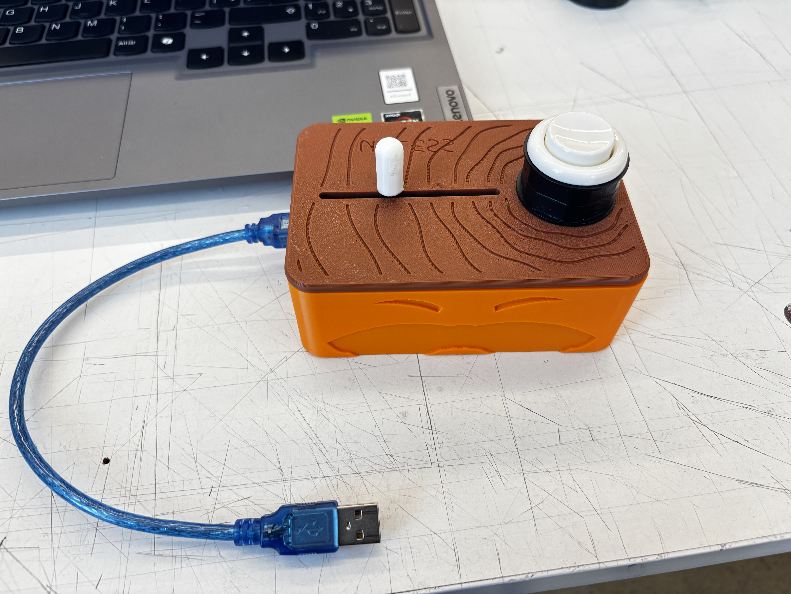

«Yo hablo por los árboles.»
Un videojuego interactivo del Lorax que se maneja con una cajita artesanal naranja y café construida con Arduino, un botón arcade y un potenciómetro deslizable. ¡Tecnología y ecología unidas!

Domina los controles físicos de la cajita o utiliza tu teclado para salvar el bosque de las máquinas del Once-ler.
| Control en la caja | Pin Arduino | Qué hace en el juego |
|---|---|---|
| Botón arcade | Pin 2 | Saltar. Si lo pulsas otra vez en el aire, haces un doble salto más alto. |
| Palanca deslizable | A0 | Golpear. Un movimiento rápido de la palanca (potenciómetro) hace que el Lorax pegue. |
Puedes interactuar con el videojuego oficial de tu archivo index_2.html directamente desde esta ventana o abrirlo en pantalla completa.